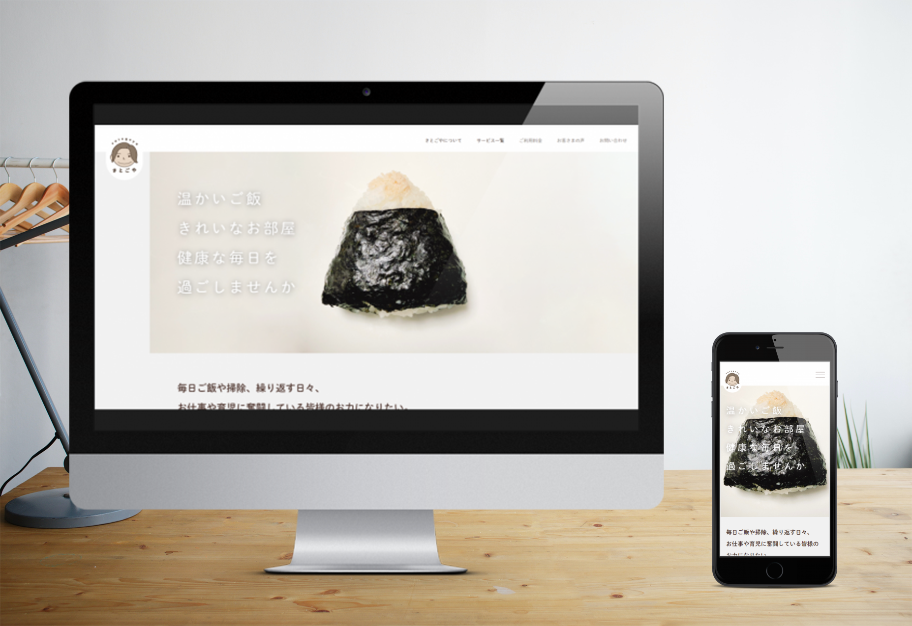

さとごや様
Webサイト
| 制作期間・範囲 | 約10営業日 （企画/WF:2営業日、デザイン:4営業日、コーディング:4営業日） |
| 使用ツール | Visual Studio Code、git pages、Adobe XD |
| カラー | |
都内で家事代行サービスを営むさとごや様のHPを制作しました。
テキストとロゴは先方指定のものを利用していますが レイアウト、デザイン、コーディングはイチから作成しました。
手書きで存在していたロゴにテキストロゴを付けて着色したデータ化しました。
簡素になりすぎないために、動きであたたかみとトレンド感を出す 商材となる、料理の写真などは提供いただいたものでしたが彩度をあげ、より美味しそうに見せています SEO対策についても可能な限り対応しました
https://docs.google.com/presentation/d/e/2PACX-1vTpGC9BxO9VzbO4c34FrIPpZsfMj3sYyw6HKgCysPjg2zy6iAdtFioOYiBFX2jmi1UECJwEE2k2fVPO/pub?start=false&loop=false&delayms=3000
テキストとロゴは先方指定のものを利用していますが レイアウト、デザイン、コーディングはイチから作成しました。
手書きで存在していたロゴにテキストロゴを付けて着色したデータ化しました。
簡素になりすぎないために、動きであたたかみとトレンド感を出す 商材となる、料理の写真などは提供いただいたものでしたが彩度をあげ、より美味しそうに見せています SEO対策についても可能な限り対応しました
https://docs.google.com/presentation/d/e/2PACX-1vTpGC9BxO9VzbO4c34FrIPpZsfMj3sYyw6HKgCysPjg2zy6iAdtFioOYiBFX2jmi1UECJwEE2k2fVPO/pub?start=false&loop=false&delayms=3000